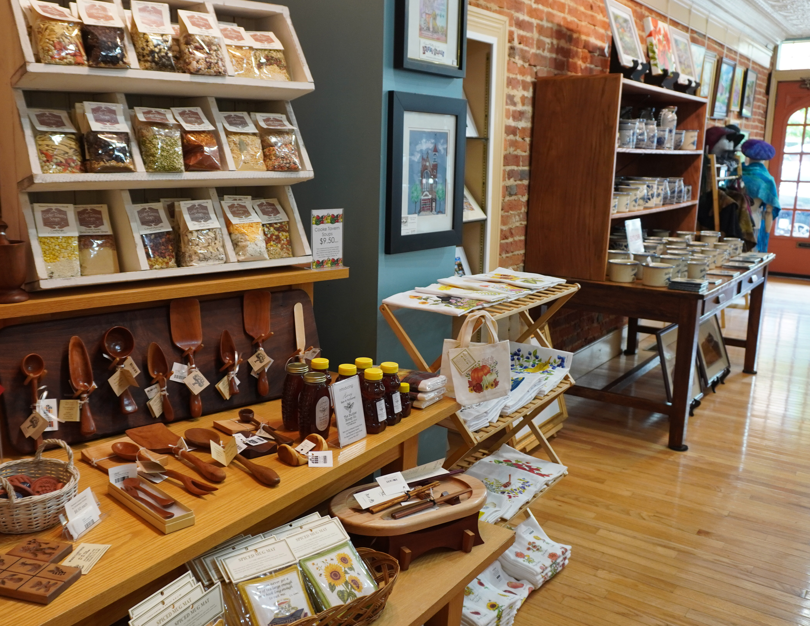

Restore Odd Fellows
See how restoration would connect the hall's character with learning, staff work, and gatherings.
Explore the Odd Fellows plan
Preserving the Past. Investing in the Future.
The campaign links restoration at Odd Fellows with collection care, research, and a new visitor arrival. Together, these plans would strengthen the places where Cumberland County's history is preserved and shared.
At the Society's Pitt Street facilities, the proposal would improve collection and research spaces and create a main visitor entrance from High Street. Todd Hall would be adapted for scanning, digitization, and processing work.
The Odd Fellows Building on High Street has a different role in the plan: restored spaces for education, staff work, and gatherings. The projects connect the care of historical materials with the places where people encounter them.
See how restoration would connect the hall's character with learning, staff work, and gatherings.
Explore the Odd Fellows planExplore the proposed storage, research, and preparation spaces behind the Society's museum and archive work.
Explore collection care
Explore the proposed High Street arrival and updated museum store as an introduction to the Society's work.
Explore the visitor experienceThe proposed work connects improvements to buildings and workspaces with their intended public purpose.
Scroll the comparison to see all columns.
| Place or work | Proposed improvement | Intended purpose |
|---|---|---|
| Odd Fellows Building | Flexible classroom and woodworking/preservation spaces | Support hands-on educational activity and historic trades. |
| Odd Fellows Hall | Restoration retaining the hall's distinctive character | Prepare the space for lectures and community gatherings. |
| Collection storage | Climate-controlled basement storage | Support the care of growing collections. |
| Pitt Street research spaces and Todd Hall | Reconfigured research areas and scanning/processing workspaces | Support research and the preparation of collection materials. |
| High Street arrival | Visitor center, main entrance, and updated museum store | Connect arriving visitors with the museum and archives. |
These are proposed improvements. Current scope and implementation details should be confirmed with the campaign team.
Ask about the projectsThe proposed classroom and woodworking spaces at Odd Fellows would support hands-on education. Collection care and research prepare materials for discovery; the visitor arrival introduces people to the Society's work.